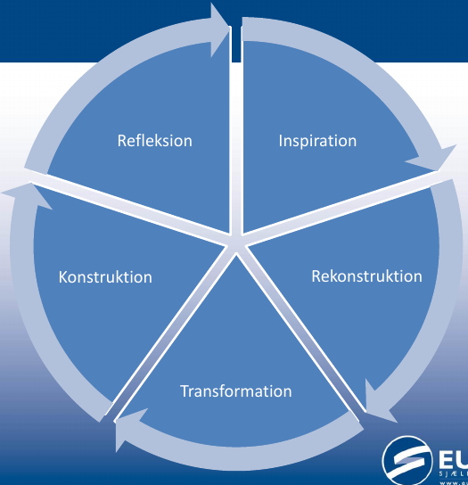
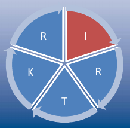
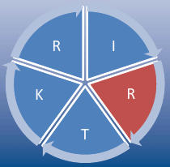
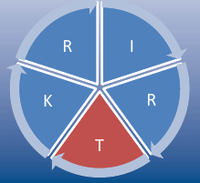
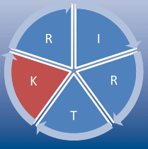
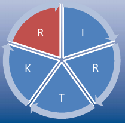

Lys og bølger
og deres sammenhæng med sneglehuse
Jacob Debel
Fysik C & B
Traditionel undervisning vendt på hovedet
"Klassisk" undervisning (i fysik)
Første lektion - nyt emne
Læreren står og holder en forelæsning.
Med fokus på teorien.
Eleverne har aldrig set det før.
Kan måske ikke følge med.
Der bruges nye ukendte fagord.
Kan det overhovedet bruges til noget?
Anden lektion - opgaveregning
Nu skal der regnes opgaver!
Men vi kender knap nok til formlerne.
Hvad betyder alle krussedullerne i ligningerne egentlig?
Er de her opgaver ikke meget svære?
Tredje lektion - forsøg
Nu skal vi i lab.
Vi skal eksperimentelt bestemme en fysisk konstant, som læreren har fortalt om.
Vi skal også skrive et teoriafsnit.
Men har vi egentlig selv helt styr på teorien?
Det var vist kun læreren, som havde helt styr på det.
Sneglehusmodellen
Fokus på sproglig udvikling i NV fag.

Inspiration

Undersøgende arbejde.
Eksperimenter.
Hverdagssprog.
Rekonstruktion

Fagbegreber introduceres.
Elever tegner og skriver selv.
Transformation

Færdige formler introduceres.
Simple regneopgaver.
Læseøvelser.
Simple forsøg.
Lærer: fagsprog - Elever: begyndende fagsprog.
Konstruktion

Teoretiske udledninger.
Problemopgaver.
Komplekse eksperimenter.
Rapportskrivning.
Fagsprog for både lærer og elever.
Refleksion

Elever kan arbejde selvstændigt.
Elever kan udlede nye sammenhænge.
Refleksion over konsekvenser og over arbejdet.
Præcist og systematisk fagsprog.